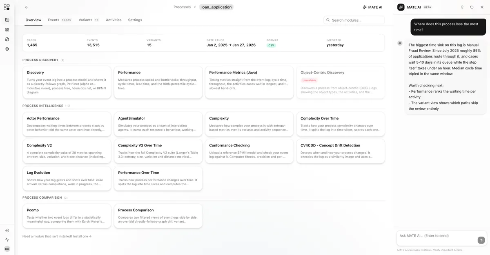
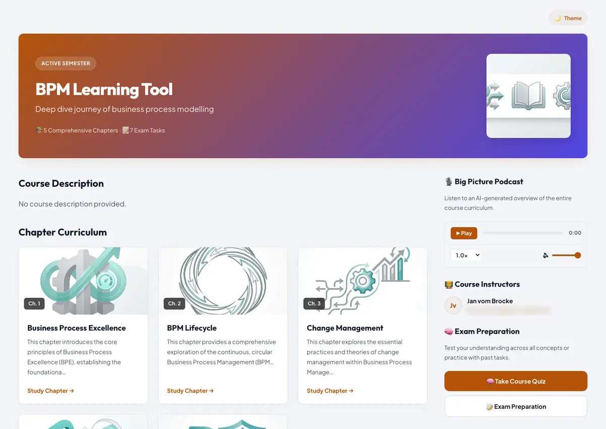

Understanding processes takes more than one discipline.
Process science is the interdisciplinary study of how processes work and how they change. It draws on computer science, information systems, management, organisation science, engineering and cognitive science by design, because no one of them sees the whole picture. This is where that community meets, and what it has built together.
All happens through processes, and all happens in processes. Organisations work through them. Our lives unfold in them.
No single discipline sees the whole process.
Processes are sequences of actions and events that take effect over time and in context. They guide our everyday activities, they change while they run, and they leave a mark on society and the environment. Studying them through one lens at a time only ever returns part of the picture.
The process is the unit of analysis
Not the system, not the organisation, not the individual decision: the process itself, as it unfolds over time and in a context that keeps moving.
Theories and methods, bundled
Process science synthesises contributions from several disciplines rather than choosing between them. Computer science, management, organisation science, engineering and cognitive science each hold part of the answer.
Accumulated for real-world impact
Interdisciplinary knowledge about processes is worth building because processes are where change actually lands: in organisations, in public services, in everyday life.
The founding article sets out the argument in full: Process science: the interdisciplinary study of socio-technical change, Process Science 1, 2024. Open access.
The community already has a calendar.
Process research gets presented and argued over at these venues. Two are dedicated to processes. The others are where process work meets the wider information systems field.
BPM
International Conference on Business Process Management
The main venue for business process management research, running annually since 2003, with a workshop programme and a doctoral consortium alongside the main tracks.
Next editionBPM 2026, Toronto, Canada, 28 September to 2 October 2026. BPM 2027 is announced for KU Leuven, Belgium.
ICPM
International Conference on Process Mining
Where process mining methods are presented and compared, with the industry track and the process discovery contests that come with the field.
Next editionICPM 2027, Rende, Italy, 8 to 12 February 2027. The series has moved from October to February, so there is no main conference in 2026.
Process Science
The journal, published by Springer
The journal of the field, fully open access, edited by Boudewijn van Dongen and Jan Mendling. It is where the interdisciplinary work gets a permanent home rather than a conference slot.
Open accessEvery article is free to read, with transparent fees and waivers for authors.
CAiSE
Advanced Information Systems Engineering
CAiSE 2027, Seville, Spain, 7 to 11 June 2027. The edition site is not yet announced.
ER
International Conference on Conceptual Modeling
ER 2026, St. John's, Canada, 5 to 8 October 2026.
ICIS
International Conference on Information Systems
ICIS 2026, Lisbon, Portugal, 13 to 16 December 2026.
ECIS
European Conference on Information Systems
ECIS 2027, Luxembourg City, 24 to 26 May 2027.
Dates checked against the organisers' own pages in September 2026. Running a workshop, summer school or seminar the community should know about? Tell us in the form.
What the community has built so far.
Two platforms are live and open to anyone in the community, one for research and one for teaching. A third is an idea we would like your help with. All of it is free and non-commercial.

MATE
The Process Science Research Platform
A modular process science platform that runs in the browser. Analysts upload event logs and work with research-backed modules. Researchers publish their own methods as modules that anyone can run, so a method leaves its repository and gets used: contributing one is a manifest and a handler class.
Every module carries the citation and licence of the paper behind it, shown wherever the module appears, so users can see whose method they are running.

The Teaching Platform
For lecturers and the students they teach
Lecturers turn their own course material into a structured learning journey, published at a single public link. Chapters carry learning objectives, key concepts and tracked progress. Each one comes with a generated podcast and a quiz that explains its answers, and exam preparation runs under a session timer.
Students need no account and install nothing. They open the link and start.
Grounded in "Adaptive BPM Learning Journeys: An AI-Powered Platform for Personalized Assessment and Multimodal Content Generation" (Schulz, Hüttmann, Drewes, Kleinekathöfer, Zimmermann, Franzoi, vom Brocke; University of Münster and ERCIS). The platform has moved on considerably since that paper.
Process Science in Practice
This one does not exist yet. The gap it would close is a familiar one: process science research gets published, and the practitioners who actually have the process problems do not read it.
The model we have in mind is AIS Research Insights, which turns peer-reviewed information systems papers into role-specific briefs with audio narration and a link back to the source, organised by outlet and year. A process science version would do the same for process research: what a paper found, what it means for a process owner or an analyst or a CIO, and where to read the original.
We are still deciding whether it is worth building, and what it should be. If you have a view, say so in the form below.
Process science is open to all people who share an interest in processes.
All people are recognised by their name and they will be involved in the further development of process science. These are the people who have joined so far.
Affiliations come from the previous site and some are out of date. Your entry is yours: ask us to correct or remove it at any time.
Process science is in a process itself.
It grows and develops as we go, and it grows through the people in it. Tell us who you are and what you would like to do. Your ideas are very welcome.
Welcome. We have your details.
We will be in touch by email. In the meantime, both platforms are open and you are welcome to look around.